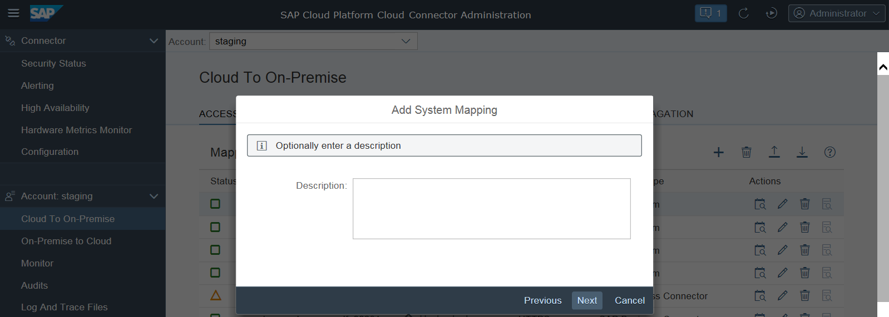
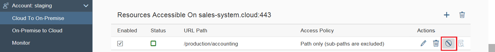

Exposing Intranet Systems
To allow your on-demand applications to access a certain back-end system on the intranet, you
need to insert an extra line into the Cloud connector access
control management.
- Choose Cloud To On Premise from your Account
menu.
- Choose Add. A wizard will open and ask for the required values.
- Back-end Type: Select the description that best matches the addressed
back-end system. This is important mainly for metering information: tunnel
connections to any kind of SAP system are free of charge, while using the tunnel
for connecting to a non-SAP system costs a fee. Furthermore, it will define,
which steps the wizard will offer and which values are possible. When you are
done, choose Next.
- Protocol: This field allows you to decide whether the Cloud connector
should use HTTP or HTTPS for the
connection to the back-end system. Note that this is completely independent from
the setting on cloud side. Thus, even if the HTTP destination on cloud side
specifies "http://" in its URL, you can select
HTTPS. This way, you are ensured that the entire
connection from the on-demand application to the actual back-end system
(provided through the SSL tunnel) is SSL-encrypted. The only prerequisite is
that the back-end system supports HTTPS on that port. For more information, see
Initial Configuration (HTTP).
- If you specify HTTPS and there is a "system certificate" imported in the
Cloud connector, the latter attempts to use that certificate for performing a
client-certificate-based login to the back-end system.
- If there is no system certificate imported, the Cloud connector opens an HTTPS connection without client certificate.
- Internal Host and Internal Port specify the
actual host and port under which the target system can be reached within the
intranet. It needs to be an existing network address that can be resolved on the
intranet and has network visibility for the Cloud connector
without any proxy. Cloud connector
will try to forward the request to the network address specified by the internal
host and port, so this address needs to be real.
- Virtual Host specifies the host name exactly as it is specified as
the URL property in the HTTP destination configuration in SAP Cloud Platform. The virtual host can be a fake name and does not need to exist. The
Virtual Port allows you to distinguish between
different entry points of your back-end system, for example,
HTTP/80 and
HTTPS/443, and have different
sets of access control settings for them. For example, some non-critical
resources may be accessed by HTTP, while some other critical resources are to be
called using HTTPS only. The fields will be pre-populated with the values of the
Internal Host and Internal
Port. In case you don't modify them, you will need to provide
your internal host and port also in the cloud side destination configuration or
in the URL used for your favorite HTTP client.
- Principal Type defines what kind of principal is used when
configuring a destination on the cloud side using this system mapping with
authentication type Principal Propagation. Regardless of
what you choose, you need to make sure that the general configuration for the
principal type has been done to make it work correctly. For destinations using
different authentication types, this setting is ignored. If you choose
None as principal type, it is not possible to use
principal propagation to this system.
- You can enter an optional description at this stage. The respective description
will be shown as a rich tooltip when the mouse hovers over the entries of the
virtual host column (table Mapping Virtual to Internal
System).

- The summary shows information about the system to be stored and when saving the host
mapping, you can trigger a ping from the Cloud connector to
the internal host, using the Check availability of internal
host check box. This allows you to make sure the Cloud connector can
indeed access the internal system, and allows you to catch basic things, such as
spelling mistakes or firewall problems between the Cloud connector and
the internal host. If the ping to the internal host is successful, the Cloud connector
saves the mapping without any remark. If it fails, a warning will pop up, that
the host is not reachable. Details for the reason are available in the log
files. You can execute such a check at any time later for all selected systems
in the Access Control overview.
- Optional: You can later edit such a system mapping (via Edit) to make
the Cloud connector
route the requests for sales-system.cloud:443 to a
different back-end system. This can be useful if the system is currently down
and there is a back-up system that can serve these requests in the meantime.
However, you cannot edit the virtual name of this system mapping. If you want to
use a different fictional host name in your on-demand application, you will need
to delete the mapping and create a new one.
Limiting the Accessible Services for HTTP(S)
In addition to allowing access to a particular host and port, you also need to specify which
URL paths (Resources) are allowed to be invoked on that host.
The Cloud connector
uses very strict white-lists for its access control, so only those URLs for which
you explicitly granted access are allowed. All other HTTP(S) requests are denied by
the Cloud connector.
To define the permitted URLs (Resources) for a particular back-end
system, choose the line corresponding to that back-end system and choose
Add in section Resources Accessible
On... below. A dialog appears prompting you to enter the specific
URL path that you want to allow to be invoked.
The Cloud connector checks
that the path part of the URL (up to but not including a possible question mark
(?) that may denote the start of optional CGI-style query
parameters) is exactly as specified in the configuration. If it is not, the request
is denied. If you select option Path and all sub-paths, the
Cloud connector
allows all requests for which the URL path (not considering any query parameters)
begins with the specified string.
The Enabled checkbox allows you to specify, whether that
resource shall initially be enabled or disabled. (See the following section for an
explanation of enabled/disabled resources.)
Enabling/Disabling Resources On-the-Fly
In some cases, it is useful for testing purposes to temporarily disable certain
resources without having to delete them from the configuration. This allows you to
easily re-provide access to these resources at a later point of time without having
to type in everything once again.
-
To disable a resource, select it and choose the
Disable button:
The status icon turns red, and from now on, the Cloud connector
will deny all requests coming in for this resource.

- To enable the resource again, select it and choose the Enable button.
- It is also possible to mark multiple lines and then to disable/enable all of them in one go
by clicking the Enable/Disable icons in the top row.
Examples:
- /production/accounting and Path only
(sub-paths are excluded) are selected. Only requests of the form
GET /production/accounting or GET
/production/accounting?name1=value1&name2=value2... are
allowed. (GET can also be replaced by
POST, PUT,
DELETE, and so on.)
-
/production/accounting and Path and all
sub-paths are selected. All requests of the form GET
/production/accounting-plus-some-more-stuff-here?name1=value1...
are allowed.
- / and Path and all sub-paths are
selected. All requests to this server are allowed.